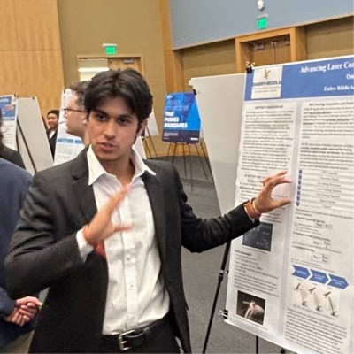

Find the wedge
Frame the painful workflow, buyer, timing, and first proof point.
Thesis-led venture studio
Sydney · Australia
Early conviction, built to endure
We find the company-shaped signal hiding inside overlooked markets.
The Crucible thesis
From early signal
to enduring company.
Technical judgement, operating discipline, and financial clarity—aligned from day one.
Venture studio and early capital
Crucible combines technical, operating, and financial judgement to turn noisy market signals into sharper early conviction. We work with founders from the first rough wedge through product, market clarity, capital strategy, and launch discipline.
Studio lens
Evidence over theatre. Software · Infrastructure · Applied AIOperating partners across product, strategy, and finance.
Hands-on company formation from idea to working product.
Focused categories where durable customer demand can compound.
What we do
Crucible is built for founders and investors who prefer clear thinking over theatre. We test markets, shape the product wedge, map the capital path, and help teams move with discipline.
Frame the painful workflow, buyer, timing, and first proof point.
Create practical product paths that reveal demand quickly.
Clarify financial, operational, and investor-facing foundations.
Focus areas
Workflow depth
Products that become core operating systems for teams inside complex industries.
Technical leverage
Practical systems that reduce friction for builders, operators, and technical teams.
Better outcomes
Automation that improves a workflow, a decision, or a customer result in a measurable way.
Team

Chief Technology Officer
Technical strategy, product buildout, and 0 to 1 systems.
Chief Executive Officer
Company direction, venture strategy, and operating plans.
Chief Financial Officer
Investment evaluation, business models, and financial structure.
Get involved
Send a concise note with the problem, the wedge, and what you have learned so far.